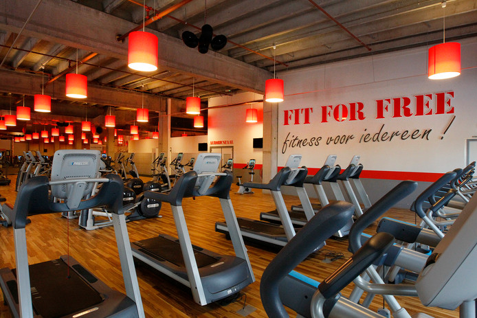

In mijn vrije tijden vind ik het leuk om te gaan gamen. En wat ik dan aan het gamen ben is meestal op mijn playstation 4. Soms game ik ook op mijn laptop of op mijn telefoon. Dan speel ik heel vaak race spelletjes, fifa en oorlog spellen. Meestal speel ik alleen, maar soms ook met mjn broertje samen of soms ook online met vrienden of onbekenden.
Ik ga voor sport elke week naar fitness. Ik ga er 2 of 3 dagen per week naar toe. Waarom ik aan fitness doe is omdat vroeger aan voetbal en wedstrijd deed en dat k nu gestopt ben. Dus is k vond dat wel weer aan een sport moest doen, dus k heb fitness gekozen. Mijn doel is om vet te verliezen en beetje spieren kweken.
